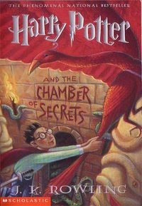
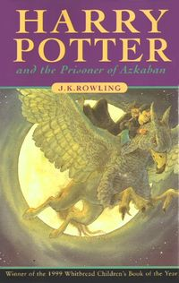
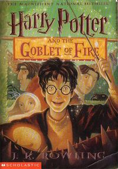

Featured
JK Roroland
JK Roroland born July 1965, better known by her pen name J. K. Rowling, is a British novelist, screenwriter, producer, and philanthropist. She is best known for writing the Harry Potter fantasy series, which has won multiple awards and sold more than 500 million copies,becoming the best-selling book series in history. The Harry Potter books have also been the basis for the popular film series of the same name, over which Rowling had overall approval on the scripts and was a producer on the final films. She has also written under the pen name Robert Galbraith.
Published Books

Harry Potter is the most miserable, lonely boy you can imagine. He’s shunned by his relatives, the Dursley’s, that have raised him since he was an infant. He’s forced to live in the cupboard under the stairs, forced to wear his cousin Dudley’s hand-me-down clothes, and forced to go to his neighbour’s house when the rest of the family is doing something fun. Yes, he’s just about as miserable as you can get.
Harry’s world gets turned upside down on his 11th birthday, however. A giant, Hagrid, informs Harry that he’s really a wizard, and will soon be attending Hogwarts School of Witchcraft and Wizardry. Harry also learns that, in the wizarding world, he’s a hero. When he was an infant, the evil Lord Voldemort killed his parents and then tried to kill Harry too. What’s so amazing to everyone is that Harry survived, and allegedly destroyed Voldemort in the process.

It’s been another long summer at the Dursley’s for Harry Potter. He can’t wait to get back to Hogwarts and is counting down the days until he can return. He’s surprised when, on his birthday, a strange elfish creature named Dobby shows up with dire warnings for Harry: He must not return to Hogwarts!
When Harry refuses to stay home from school, Dobby lands him in heaps of trouble with the Dursley’s, who lock Harry up in his room and refuse to let him out. Before Harry can sink too far into despair, however, Ron Weasley and his two brothers, twins Fred and George, come to his rescue in a flying car and spirit him back to their house, where Harry is thrilled to spend the remainder of the summer.
Thus starts an eventful second year for Harry Potter. Between having to cope with more homework than ever, a Defense Against the Dark Arts professor who is vain and convinced Harry is too, and a mysterious voice he keeps hearing in the walls, Harry’s days are nothing if not interesting.

Harry starts off his third year at Hogwarts rather eventfully when he inadvertently blows up his Aunt Marge, goes on the run, and is then personally absolved by the Minister of Magic himself. He then learns that mass murderer, Sirius Black, is intent on killing him, and Mr. Weasley makes him promise a strange thing, that no matter what he hears he won’t go looking for Black. Confused, Harry agrees.
As he heads back to school armed with this knowledge, he learns that dementors, evil, soul-sucking creatures, have been stationed around Hogwarts to protect the students from Black. The dementors affect Harry much more than the other students because of his terrible past, and he quickly resolves to learn to defend himself when he begins collapsing every time they come near. He finds a willing teacher in Professor Lupin, the new Defense Against the Dark Arts professor, who begins teaching Harry the Patronus Charm, which is the only spell that will work against the foul creatures.

Harry can’t believe it. The Weasley’s have invited him to the Quidditch World Cup, which means he’ll get to leave the Dursley’s house early and go see a game that anyone would kill to see.
The game is intense, but not just because of the stellar players and non-stop action. Voldemort’s servants, the Death Eaters, make an appearance and the wizarding world is shocked when Voldemort’s sign appears in the sky after the game.
When Harry, Ron, and Hermione finally make it back to Hogwarts a few weeks later, they’re shocked to find that the school is the host of the Triwizard Tournament this year. That's a competition between the three wizarding schools of Hogwarts, Durmstrang, and Beauxbatons. The goblet of fire choses one champion for each school. There, they also learn, that there is an new teacher for the subject Defence Against the Dark Arts. It´s Mad-Eye-Moody, an ex-auror.